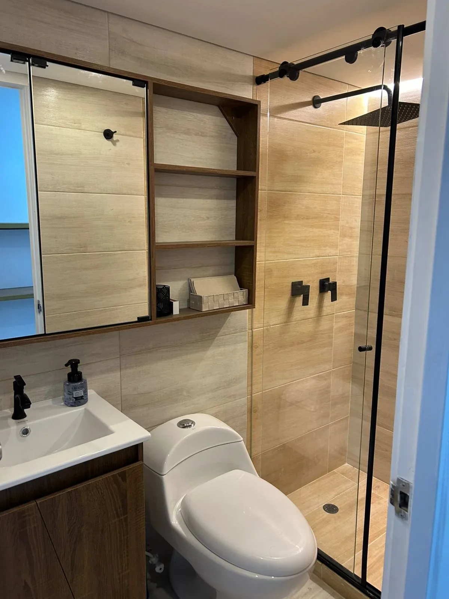
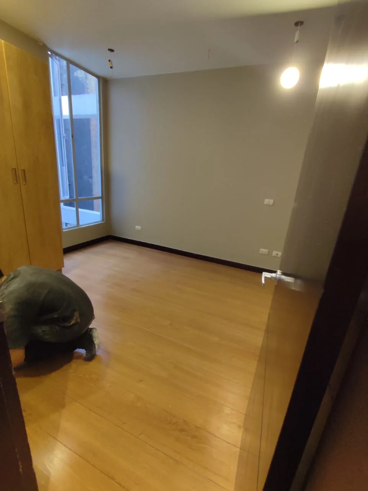
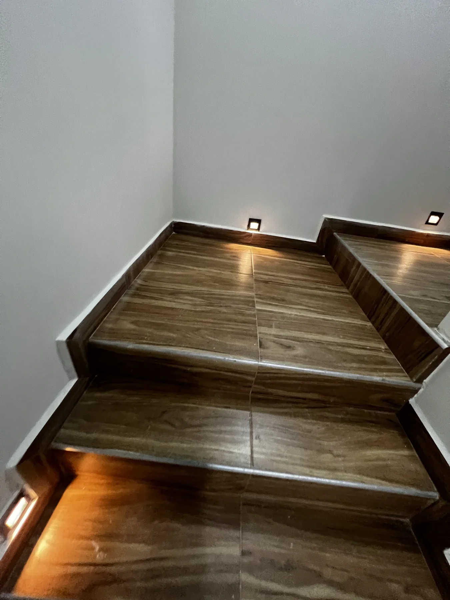
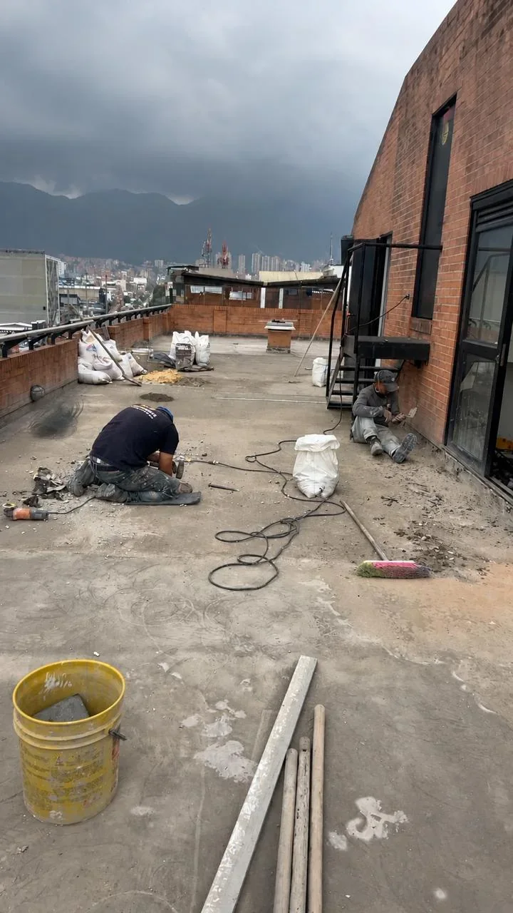
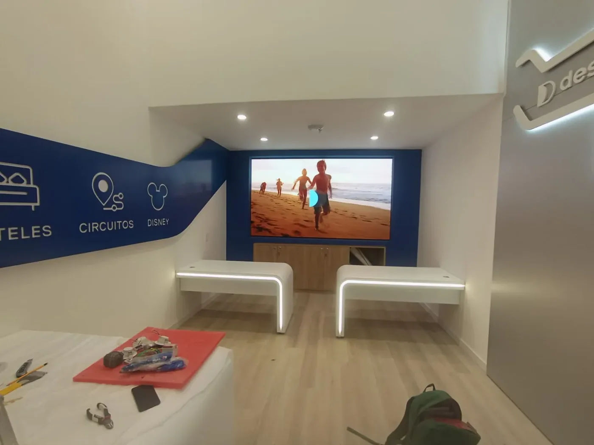

Baños
Remodelación de baños y acabados interiores.
Intervenciones enfocadas en distribución, enchapes, muebles, divisiones de ducha y una entrega limpia del espacio terminado.

Servicios
SANBU trabaja remodelación residencial y comercial, acabados, drywall, pisos e impermeabilización con criterio técnico y seguimiento.

Baños
Intervenciones enfocadas en distribución, enchapes, muebles, divisiones de ducha y una entrega limpia del espacio terminado.

Apartamentos y viviendas
Cocinas, salas, accesos y baños se documentan como parte de procesos residenciales reales.


Drywall y Superboard
Trabajos interiores que integran estructura liviana, iluminación y acabados para usos residenciales o comerciales.


Pisos y enchapes
Instalación y terminación de pisos, enchapes y superficies asociadas a remodelaciones interiores.



Impermeabilización
Intervención en terraza o cubierta con registro de proceso y resultado final, útil para controlar filtraciones y proteger superficies expuestas.


Adecuaciones comerciales
Recepciones, divisiones en vidrio y acabados interiores para espacios comerciales que necesitan orden, imagen y funcionalidad.



Método
Una ruta breve para transformar una necesidad en un alcance claro y una ejecución acompañada.
Revisión del espacio y sus condiciones.
Definición de actividades y prioridades.
Coordinación del frente de obra.
Revisión del resultado visible.
Cotización
Cuéntanos si se trata de baño, vivienda, local, drywall, pisos o impermeabilización.
Comparte fotos del estado actual y el alcance que tienes en mente.